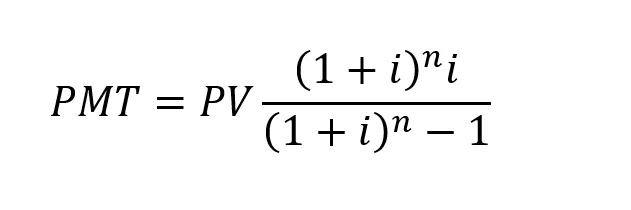
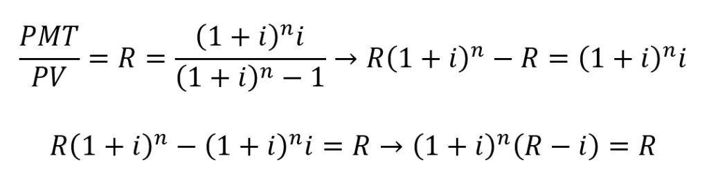
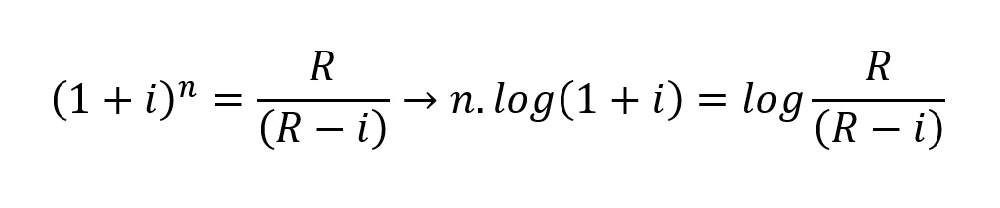
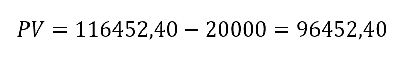
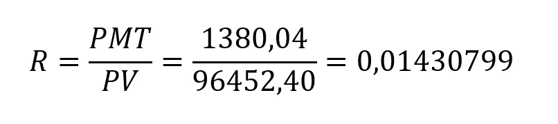
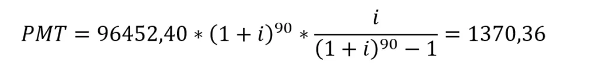

História
A Tabela Price, também conhecida como Sistema Francês de Amortização, tem suas raízes no século XVIII e leva o nome do matemático inglês Richard Price (1723-1791). Ele era um filósofo, economista e atuário que contribuiu significativamente para o estudo das finanças e do cálculo de juros compostos.
Richard Price ganhou destaque ao escrever sobre o conceito de valor do dinheiro no tempo, o que hoje é essencial na matemática financeira. Seus estudos sobre cálculos atuariais e teoria de seguros influenciaram vários setores financeiros, incluindo o campo dos empréstimos e financiamentos. Embora Price tenha se tornado amplamente conhecido por suas contribuições à economia e ao cálculo de seguros, seu nome foi vinculado ao método de amortização que leva em conta o pagamento de parcelas constantes ao longo do tempo.

Como Funciona
Você já pensou em reduzir o prazo de seu financiamento pela Tabela Price? Vamos supor que tenha um financiamento em andamento e queira fazer uma amortização extra para fins de redução do prazo. Como vimos no artigo anterior, a fórmula para o cálculo do pagamento mensal (PMT) pela Tabela Price é:

Como o financiamento está vigente, você já sabe o valor do PMT, da taxa de juros (i) e o saldo devedor que passa a ser o valor presente PV. Assim, o objetivo é determinar o valor do tempo (n) para o saldo devedor (após amortização extra) em algum momento dentro do prazo de financiamento. Esse valor pode ser obtido, conforme segue:

Onde R é a razão entre PMT e PV.
Isolando o termo que contém n e aplicando o logaritmo, tem-se:

Portanto, o tempo de financiamento para o saldo devedor atual fica:
Exemplo
Para ilustrar uma aplicação, sejam os mesmos dados usados no artigo anterior:

i=0,0056541
PMT=1380,04
Amortização extra = R$ 20.000,00 a ser feita após o pagamento da 5ª parcela do financiamento.
O valor presente é o saldo devedor no 5º mês (consulte o artigo anterior) menos a amortização extra:

Sabendo o valor presente, pode-se determinar a razão R:
Assim, o tempo equivalente para um novo valor de PV fica:

Como se trata de um número inteiro, arredonda-se o valor obtido para o inteiro mais próximo, ou seja, n=90. Portanto, a redução de prazo é equivalente a 25 meses, pois após o pagamento da 5ª parcela, faltavam 115 prestações que subtraídas de 90 resulta em 25. Além disso, deve-se atualizar o PMT, pois a amortização não foi feita com um número exato de prestações. Assim, deve-se calcular o novo PMT com base nas seguintes variáveis:
i=0,0056541
PV= 96452,40
n=90
Vantagens da tabela Price
Uma das principais vantagens da tabela Price é a previsibilidade, pois as parcelas são iguais ao longo de todo o período de financiamento. Isso facilita o planejamento financeiro. Além disso, como as parcelas são constantes, elas tendem a ser menores do que em outros sistemas de amortização, pelo menos no início do financiamento.
Principais tipos de contrato que usam o financiamento Price
A tabela Price é versátil e pode ser aplicada em diversos tipos de financiamento. Os contratos que mais comumente utilizam este método são os de financiamento imobiliário e de veículos. Vamos detalhar como cada um desses contratos funciona com a tabela Price.
Financiamento imobiliário
O financiamento imobiliário é um dos contratos mais comuns que utilizam a tabela Price. É comum para pessoas que desejam comprar uma casa ou apartamento, mas não têm o valor total para pagar à vista.
Financiamento de veículo
Outro uso comum da tabela Price é no financiamento de veículos. Semelhante ao financiamento imobiliário, permite que os indivíduos comprem um carro, pagando em parcelas fixas ao longo do tempo.